Avenging Spirit RE:BORN · 기획 · 2026-10-15 · 3차 — 두 버튼 · 등급 · 필살기 23종 게임 반영
호스트 23명 스킬 컨셉
몸마다 컨셉을 하나 정하고, 그 컨셉을 작게 쓰는 것이 액티브, 크게 터뜨리는 것이 필살기입니다. 패시브는 그 컨셉이 평타에 늘 묻어나는 자리입니다. 모든 시안은 PD 피드백 12개 기준(기승전결 · 캐릭터가 스킬을 만든다 · 소환물도 같이 공격 · 크기 절제 등)으로 검수했습니다.
액티브 · 일반 스킬
평타가 맞을 때마다 충전(지금 30대) 컷인 없이 바로 나간다 예전 스킬을 살려 위력만 낮춘다 성급이 오를 때마다 세진다 · ★3 에 추가 옵션 하나적 호스트도 이 스킬(약식판)만 쓴다 필살기
빙의할 때 1회 — 쓰면 다음 빙의까지 잠김 컷인 + 전투 멈춤, 가장 강한 연출 이번 시안(던파 레퍼런스) 연출 적 호스트는 쓰지 않는다(대장은 결정 필요) 패시브
몸에 늘 붙어 있는 효과(지금 값 그대로) 숙련도 0 이면 액티브와 같이 잠김 시안 세 번째 컷이 패시브가 터지는 순간
성급 성장 (레벨 디자인 안)
성급 단계 = 숙련도 = 스킬 Lv 입니다(별 하나 = 두 단계). 지금은 액티브가 Lv4 이후 멈추고 Lv5 특수 효과가 6종에만 있어서, 성급을 올려도 스킬이 거의 안 늘었습니다. 아래처럼 모든 단계에서 액티브가 자라고, ★3 에 추가 옵션 하나 가 붙게 바꿉니다.
단계 별 액티브 위력 보조값 추가 옵션 필살기 위력 0 — 봉인 — — 봉인 1 ★½ ×1.00 기본 — ×1.00 2 ★ ×1.06 — ×1.04 3 ★1½ ×1.12 — ×1.08 4 ★★ ×1.18 +1칸 — ×1.12 5 ★2½ ×1.24 — ×1.16 6 ★★★ ×1.30 추가 옵션 열림 ×1.20 7 ★3½ ×1.36 +1칸 ×1.24 8 ★★★★ ×1.42 ×1.28 9 ★4½ ×1.48 ×1.32 10 ★★★★★ ×1.54 +1칸 옵션 수치 ×2 ×1.36
위력은 단계마다 +6%(Lv10 ×1.54). 몸 공격력도 단계마다 ×1.07 로 따로 올라서, 둘을 곱하면 Lv10 액티브는 Lv1 의 약 2.8배입니다.
보조값은 Lv4 · 7 · 10 에 한 칸씩 계단으로 — 「몇 초 → 몇 초」가 성급 화면에서 보이는 단계.
필살기는 빙의 1회라 위력만 +4% 씩(Lv10 ×1.36), 옵션은 액티브에만.
지금 Lv5 특수 효과 6종은 ★3 옵션으로 옮깁니다(열리는 단계 5 → 6). 등급 (가챠 · 2026-10-15 확정)
등급 호스트 가챠 확률 기본 능력치 필살기 위력 성급 조각 · 골드
R 갱스터 · 폭력배 · 아마존 · 호퍼 · 코만도(기관총) · 코만도(수류탄) · 샐러맨더 · 청룡 · 구루 · 화이트 위저드 · 설녀 79% ×1.00 ×1.00 ×1.0 SR 호퍼(기관단총) · 코만도(레이저) · 닌자 · 닌자(사슬) · 로봇 · 코만도(미사일) 18% ×1.10 ×1.15 ×1.5 SSR 아마존 정예 · 드라군 · 영매 · 슬러거 · 흡혈귀 3% (천장 80회) ×1.20 ×1.30 ×2.0 전설 사신 (히든 · 가챠 제외) — ×1.20 ×1.30 ×2.0
성급 · 옵션 구조는 등급과 상관없이 같다 — 등급은 출발점과 필살기 세기만 바꾼다(R 도 성급을 올리면 쓸 만하게).
값은 GameConfig 「등급 차등」 칸(_gradeStatMul · _gradeUltMul · _gachaRatePercent · _gachaPity · _gradeMultiplier). 2차에서 바뀐 것 PD 피드백 바꾼 곳 이유
성급이 오르면 액티브가 세져야 · 높은 성급에 옵션 하나 위 성급 표 · 23명 ★3 옵션 Lv4 이후 안 자라던 액티브를 Lv10 까지 계속 자라게 한 방은 보스에게 유리 — 끌고 오지 말고 내가 가서 때린다 닌자(사슬) 필살기 사슬 처형 → 사슬 돌격 연격 보스를 끌어오면 보스전이 깨진다. 끌기 · 모으기 스킬(슬러거 · 구루)은 보스 제외 유지 소환사 필살기는 소환 계열로(예: 골렘) 영매 골렘 강령 · 사신 망자 군단 · 로봇 포탑 군단 · 닌자 그림자 삼분신 소환 군 넷 모두 「액티브 = 작은 소환 · 필살기 = 큰 소환」으로 맞춤. 영매의 원혼 강림은 빠짐
01
갱스터 청부 저격수 — 보스 킬러 ★ 필살기 변경
패시브 처형 계약 — 표식이 붙은 적을 20% 로 즉사. 엘리트는 최대 체력 50%, 보스는 30%.
★3 옵션 표식 붙은 적이 받는 피해 +15% (★5 에서 수치 ×2)
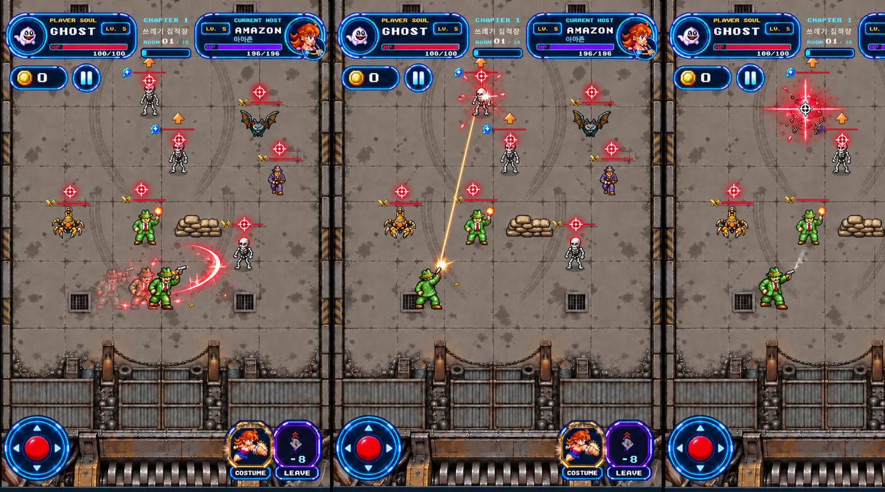
액티브 · 평타로 충전 일제 표식 방 안 모든 적에게 3초간 표식을 새긴다.
세 컷: 액티브 발동 → 결과 → 패시브 순간
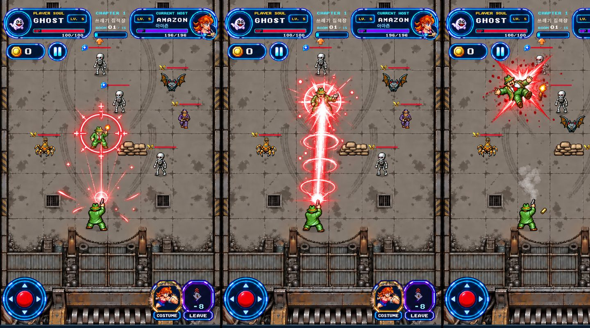
필살기 · 빙의할 때 1회 청부 처형 가장 체력이 높은 적(보스 포함)을 1.5초 조준한 뒤 초대형 한 발. 보스는 최대 체력의 % 피해.
세 컷: 기 → 승 · 전 → 결
02
호퍼 급소 사냥꾼 — 여럿에게 치명
★3 옵션 치명타를 맞힐 때마다 정조준 +0.3초 (최대 +2초) (★5 에서 수치 ×2)
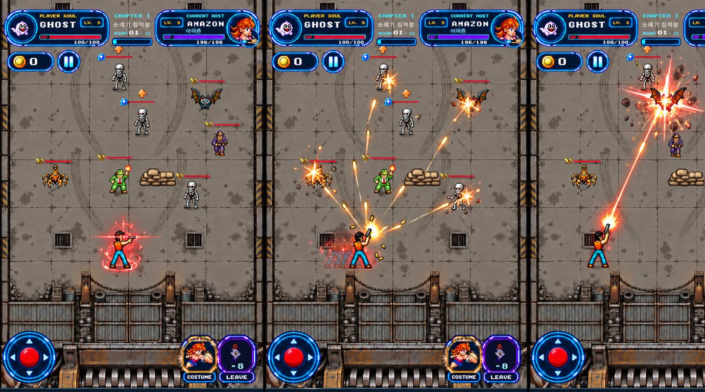
액티브 · 평타로 충전 정조준 5초간 치명타 확률이 90% 로 고정된다.
세 컷: 액티브 발동 → 결과 → 패시브 순간
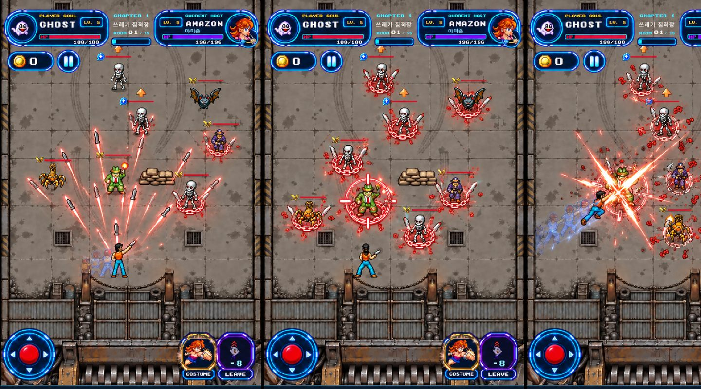
필살기 · 빙의할 때 1회 킬 포인트 칼날로 앞의 적들을 묶고, 묶인 적 전원에게 치명 확정.
세 컷: 기 → 승 · 전 → 결
03
닌자(사슬) 사슬 사냥꾼 — 사슬을 걸고 내가 날아간다 ★ 필살기 변경
패시브 흘리기 — 10% 로 피해를 통째로 흘린다.
★3 옵션 묶임이 풀릴 때 사슬이 끊기며 둘레 피해 (★5 에서 수치 ×2)
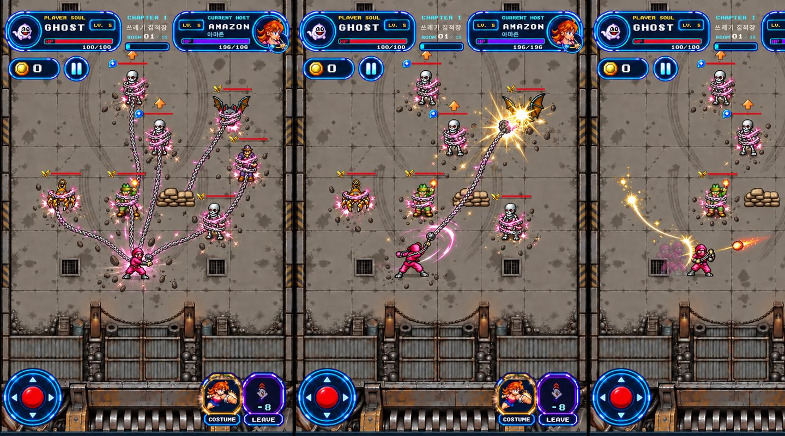
액티브 · 평타로 충전 사슬 결박 방 안 모든 적을 5초간 묶는다. 묶인 적은 더 아프게 맞는다.
세 컷: 액티브 발동 → 결과 → 패시브 순간
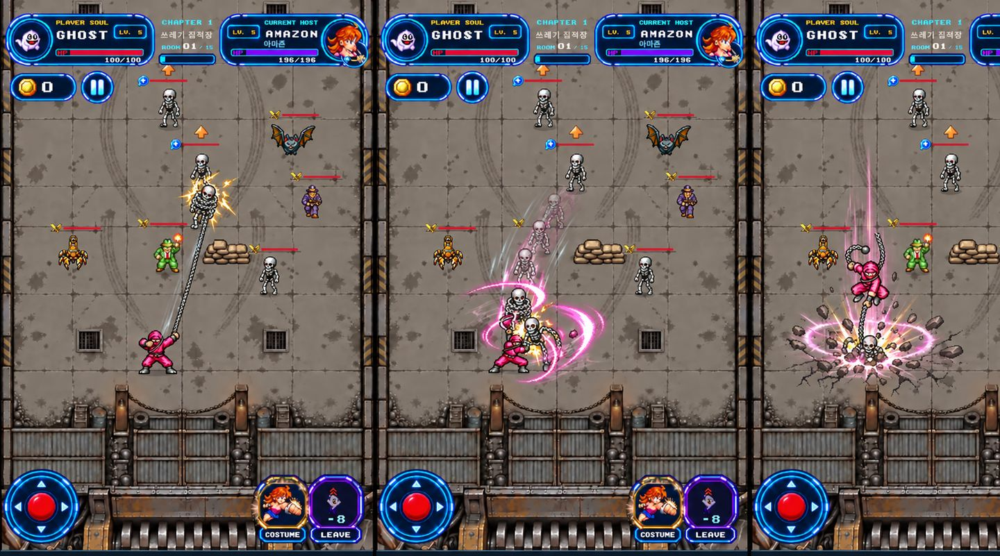
필살기 · 빙의할 때 1회 사슬 돌격 연격 가장 강한 적에게 사슬을 걸고 내가 날아가 연타 뒤 내려찍는다(보스를 끌어오지 않는다).
세 컷: 기 → 승 · 전 → 결
04
영매 강령술사 — 혼과 함께 싸운다 ★ 액티브 · 필살기 변경
패시브 강령 — 적을 잡으면 30% 로 해골이 일어선다.
★3 옵션 해골 +1기 (3기) (★5 에서 수치 ×2)
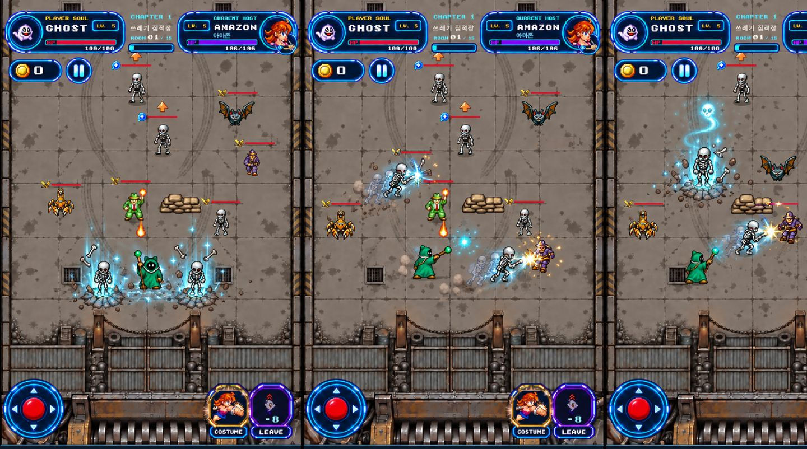
액티브 · 평타로 충전 해골 소환 해골 2기를 불러 같이 싸운다(골렘 대신 — 패시브 「강령」과 같은 해골).
세 컷: 액티브 발동 → 결과 → 패시브 순간
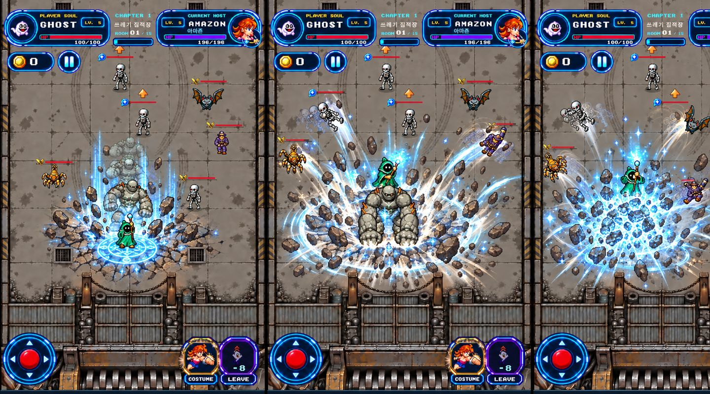
필살기 · 빙의할 때 1회 골렘 강령 거대 골렘을 불러 8초간 같이 싸운다 — 내리찍기로 둘레를 부수고 영매 앞을 막는다.
세 컷: 기 → 승 · 전 → 결
05
사신 (히든) 죽음의 군주 ★ 필살기 변경
패시브 망자 소집 — 적을 잡을 때마다 그 자리에서 해골이 일어선다.
★3 옵션 즉사시킨 적 하나마다 시간 +0.3초 (★5 에서 수치 ×2)
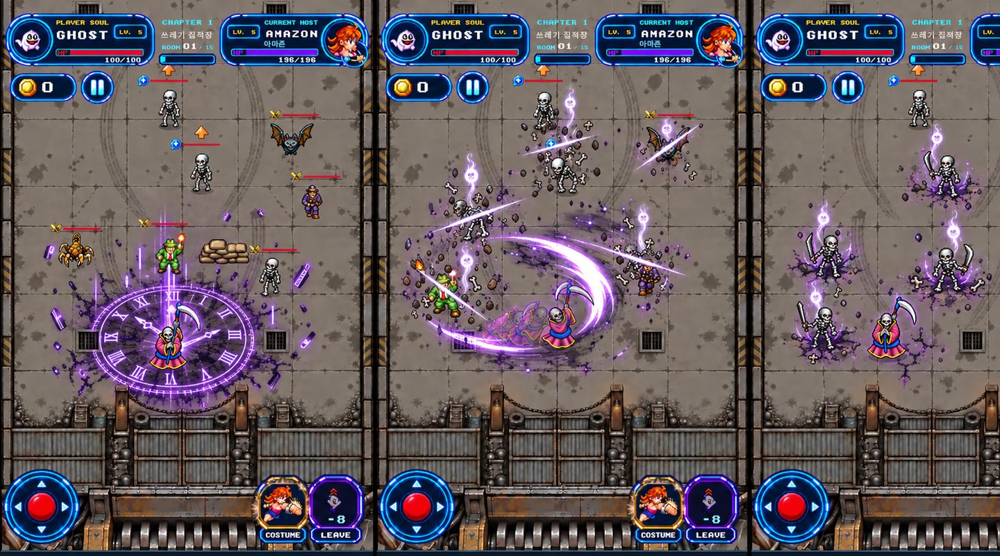
액티브 · 평타로 충전 사신의 시간 3초간 때리는 적이 죽는다. 중간 보스는 절반, 보스는 열에 하나.
세 컷: 액티브 발동 → 결과 → 패시브 순간
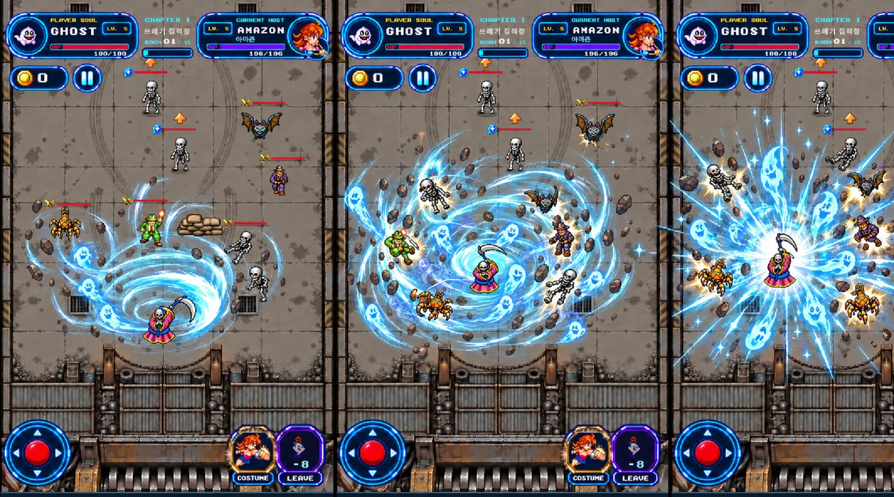
필살기 · 빙의할 때 1회 망자 군단 해골 · 유령 군단을 불러 돌격시키고, 군단이 사라질 때 혼불로 터진다.
세 컷: 기 → 승 · 전 → 결
06
로봇 포탑 기술자 ★ 필살기 변경
패시브 예비 회로 — 평타가 2% 로 액티브 쿨을 1초 당긴다.
★3 옵션 포탑 +1대 (2대) (★5 에서 수치 ×2)
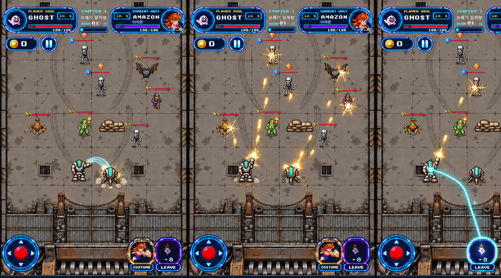
액티브 · 평타로 충전 포탑 전개 10초간 자동으로 쏘는 포탑을 하나 세운다.
세 컷: 액티브 발동 → 결과 → 패시브 순간
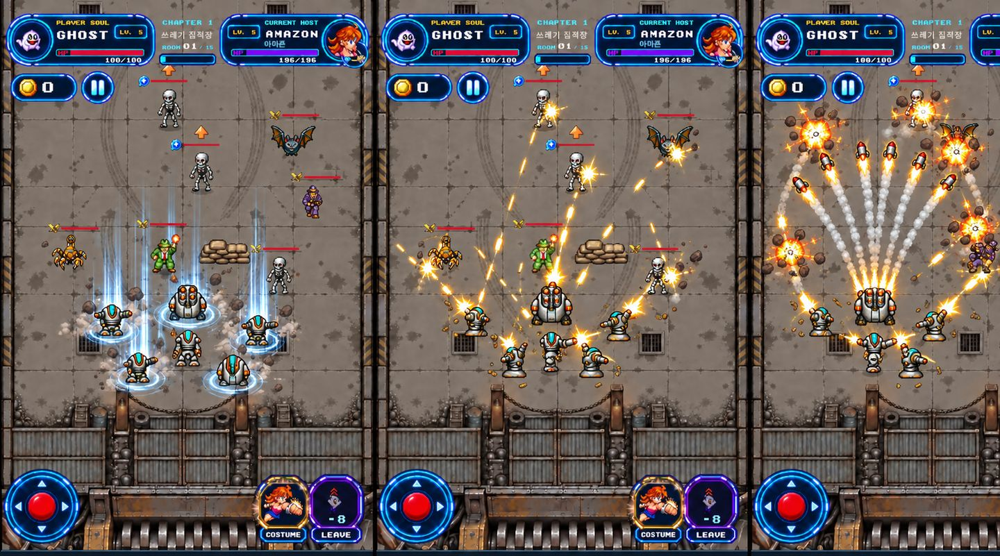
필살기 · 빙의할 때 1회 포탑 군단 포탑 3대 + 대형 미사일 포탑 1대를 불러 교차 사격, 마지막에 미사일 일제 사격.
세 컷: 기 → 승 · 전 → 결
07
닌자 분신술사 — 속이고 협공 ★ 필살기 변경
패시브 질주 — 적을 잡으면 1.5초간 이동속도 +30%.
★3 옵션 분신이 사라질 때 연막 폭발 — 둘레 적 둔화 (★5 에서 수치 ×2)
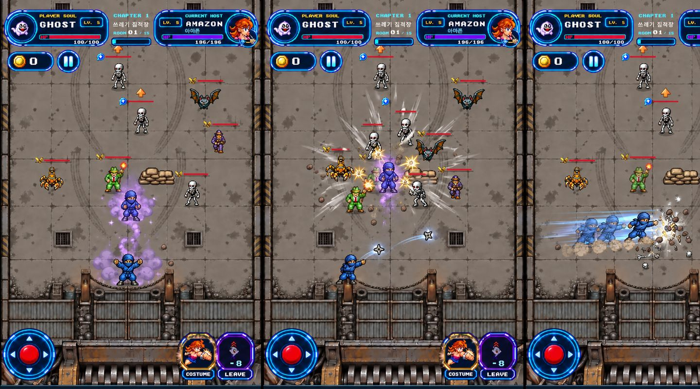
액티브 · 평타로 충전 그림자 분신 방 한가운데 분신을 세운다. 5초간 적이 전부 분신을 노린다.
세 컷: 액티브 발동 → 결과 → 패시브 순간
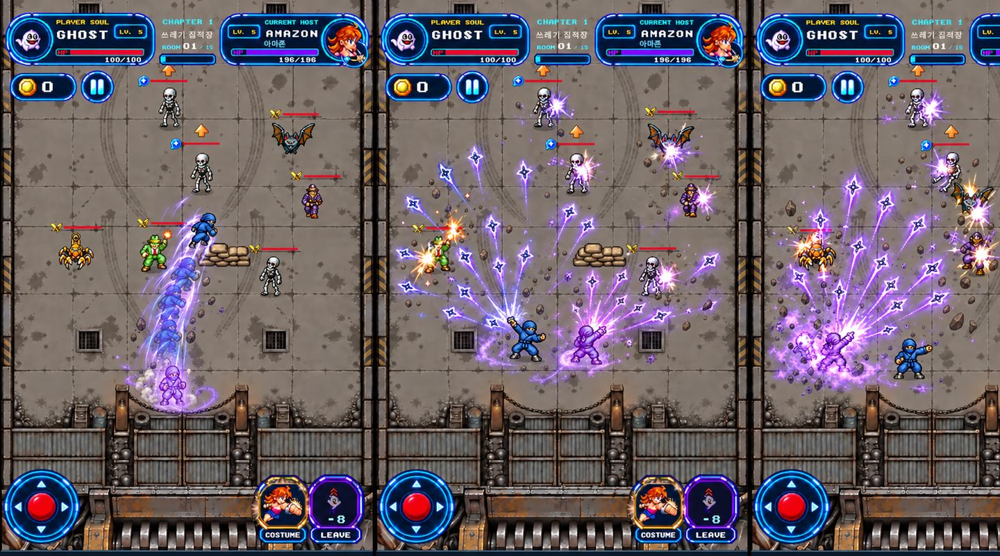
필살기 · 빙의할 때 1회 그림자 삼분신 분신 셋을 불러 6초간 같이 공격한다 — 닌자가 던질 때 셋도 같이 던진다.
세 컷: 기 → 승 · 전 → 결
08
아마존 번개 돌격수
패시브 쉴드 질주 — 쉴드가 찰수록 빨라진다. 가득이면 이동속도 +40%.
★3 옵션 착지 둘레 적 0.5초 기절 (★5 에서 수치 ×2)
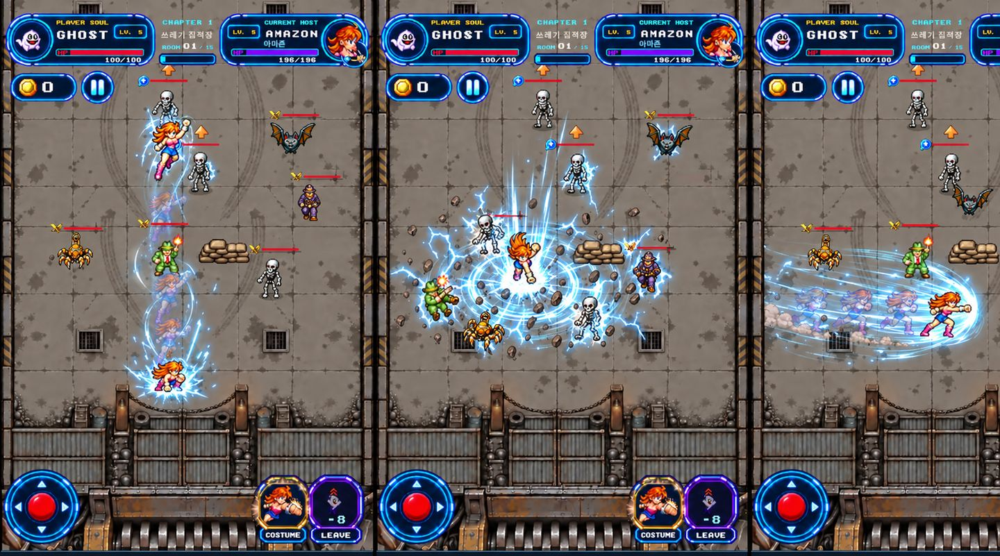
액티브 · 평타로 충전 도약 강타 가장 가까운 적에게 뛰어들어 둘레를 300% 피해로 친다.
세 컷: 액티브 발동 → 결과 → 패시브 순간
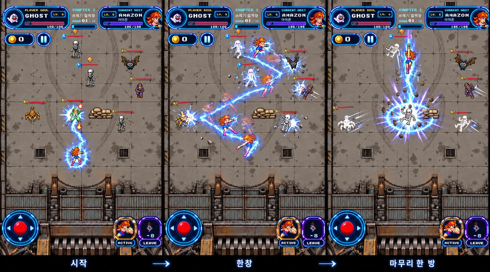
필살기 · 빙의할 때 1회 번개 무희 적 사이를 잔상으로 옮겨 다니며 치고 내려찍기, 시전 중 무적.
세 컷: 기 → 승 · 전 → 결
09
호퍼(기관단총) 돌파 특공 ★ 액티브 변경
패시브 충격 반동 — 10% 로 맞은 적을 밀어낸다.
★3 옵션 착지 뒤 1초간 공격 속도 +50% (★5 에서 수치 ×2)
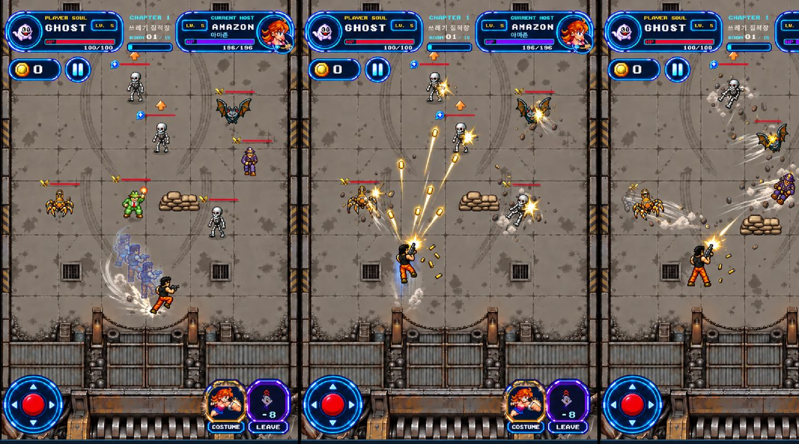
액티브 · 평타로 충전 백스텝 사격 뒤로 크게 뛰며 앞으로 쏟아붓는다(붙은 적에게서 빠지는 기술).
세 컷: 액티브 발동 → 결과 → 패시브 순간
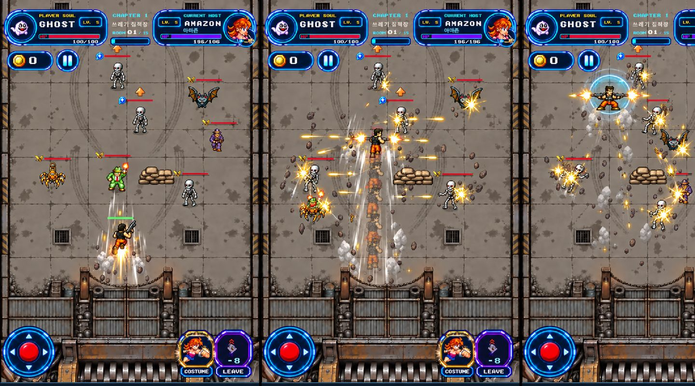
필살기 · 빙의할 때 1회 돌진 난사 가장 먼 적까지 일직선 돌진하며 양옆 난사, 도착하면 무적.
세 컷: 기 → 승 · 전 → 결
10
흡혈귀 피의 군주 — 깎이며 폭주
패시브 흡혈 — 8% 로 공격력의 5% 만큼 회복한다.
★3 옵션 넘친 회복량만큼 쉴드 (★5 에서 수치 ×2)
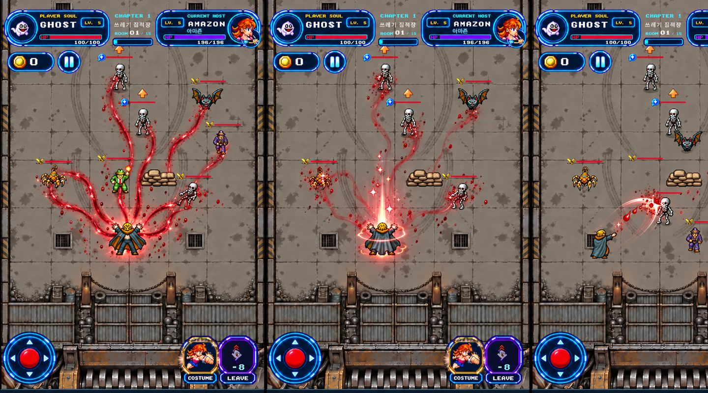
액티브 · 평타로 충전 혈연 둘레 5 m 의 적 머릿수만큼 최대 체력의 2% 씩 회복한다.
세 컷: 액티브 발동 → 결과 → 패시브 순간
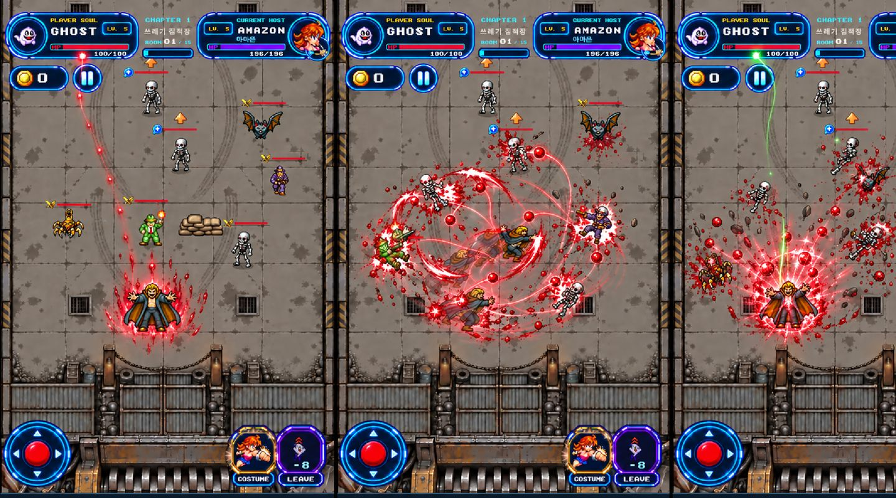
필살기 · 빙의할 때 1회 피의 폭주 5초간 체력을 내주고 폭주, 처치하면 피 구슬로 회복.
세 컷: 기 → 승 · 전 → 결
11
드라군 용기병 — 탈것
패시브 불씨 — 명중한 적에게 10% 로 화상. 겹치지 않는다.
★3 옵션 불바다 2곳 (가까운 적 둘) (★5 에서 수치 ×2)
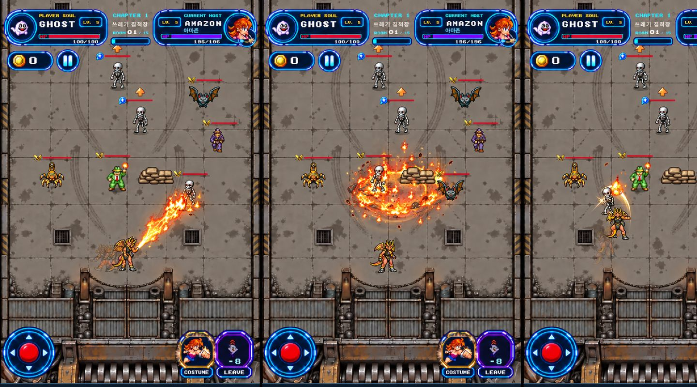
액티브 · 평타로 충전 화염 지대 가장 가까운 적 발밑에 불바다를 편다. 밟고 선 적이 계속 탄다.
세 컷: 액티브 발동 → 결과 → 패시브 순간
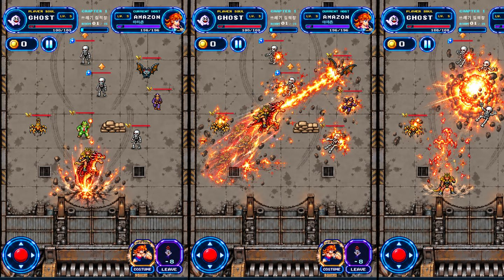
필살기 · 빙의할 때 1회 용 돌격 불을 뿜는 용을 타고 3초간 돌진.
세 컷: 기 → 승 · 전 → 결
12
슬러거 장외 타자 — 받아치고 날린다
패시브 장외 타구 — 막타에 20% 로 주변 적을 날려 버린다.
★3 옵션 반사탄이 관통 (현행) (★5 에서 수치 ×2)
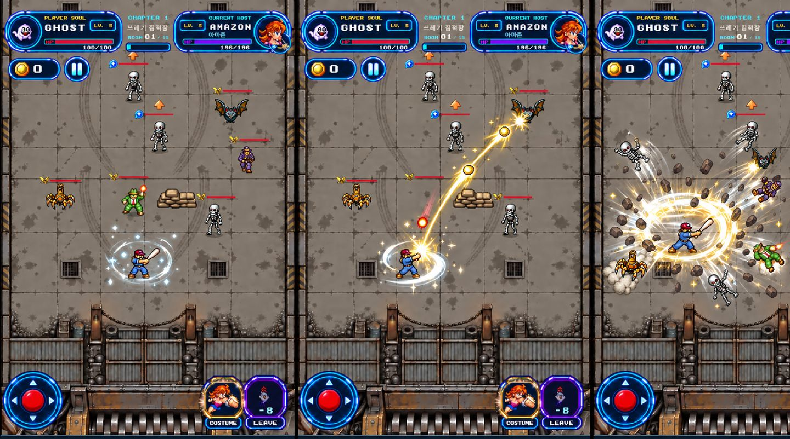
액티브 · 평타로 충전 전탄 반사 5초간 날아오는 탄을 전부 되받아친다. 반사탄은 더 아프다.
세 컷: 액티브 발동 → 결과 → 패시브 순간
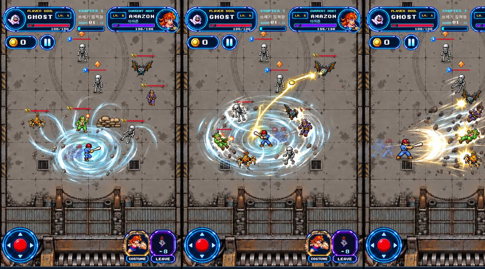
필살기 · 빙의할 때 1회 풀스윙 회오리 돌며 회오리를 키워 끌어당기고 풀스윙으로 날린다.
세 컷: 기 → 승 · 전 → 결
13
구루 결계 수도승
패시브 무형보 — 걸어 다닐 때 지형지물을 통과한다.
★3 옵션 결계 안에서 쉴드가 다시 찬다 (현행) (★5 에서 수치 ×2)
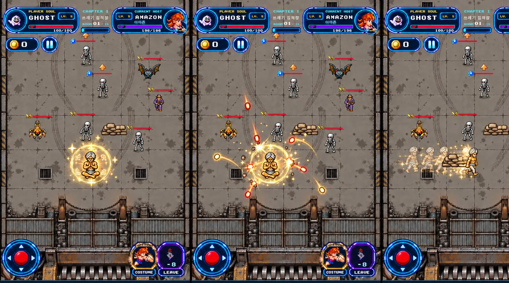
액티브 · 평타로 충전 수호 결계 3초간 받는 피해 −50% · 쉴드 획득 2배.
세 컷: 액티브 발동 → 결과 → 패시브 순간
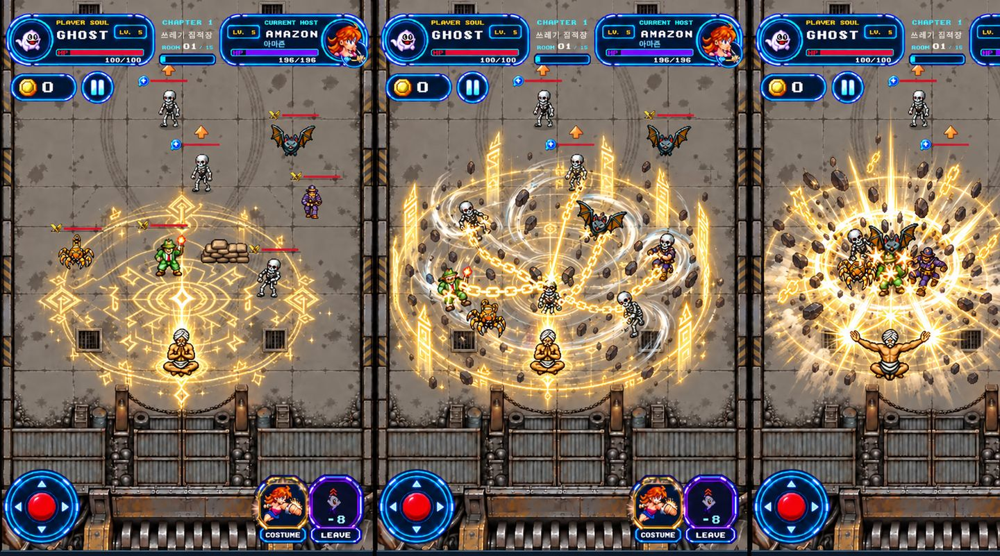
필살기 · 빙의할 때 1회 결계 가두기 결계로 적을 가운데로 모아 가두고 터뜨린다.
세 컷: 기 → 승 · 전 → 결
14
코만도(수류탄) 폭파 전문가
패시브 파편탄 — 상대 방어력을 50% 무시한다.
★3 옵션 착탄마다 작은 화상 장판 (현행) (★5 에서 수치 ×2)
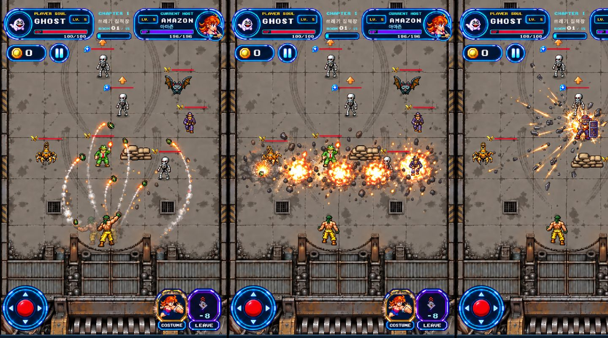
액티브 · 평타로 충전 융단 폭격 수류탄을 표적 둘레에 한 줄로 떨군다.
세 컷: 액티브 발동 → 결과 → 패시브 순간
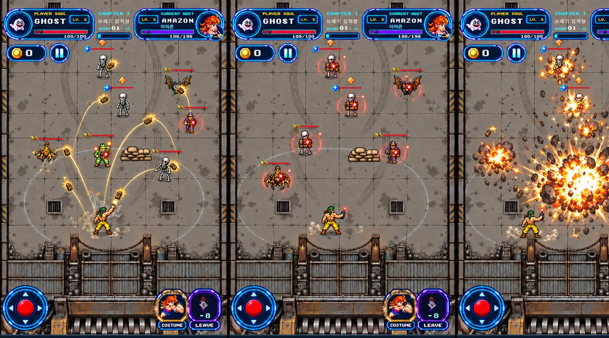
필살기 · 빙의할 때 1회 C4 반경 안 모든 적에게 폭탄을 붙이고 2초 뒤 연쇄 폭발(그동안 평타 쉼).
세 컷: 기 → 승 · 전 → 결
15
샐러맨더 독술사 — 지속 피해
패시브 독니 — 명중한 적에게 10% 로 독. 겹치지 않는다.
★3 옵션 중독된 적이 죽으면 독이 터져 옆으로 옮는다 (★5 에서 수치 ×2)
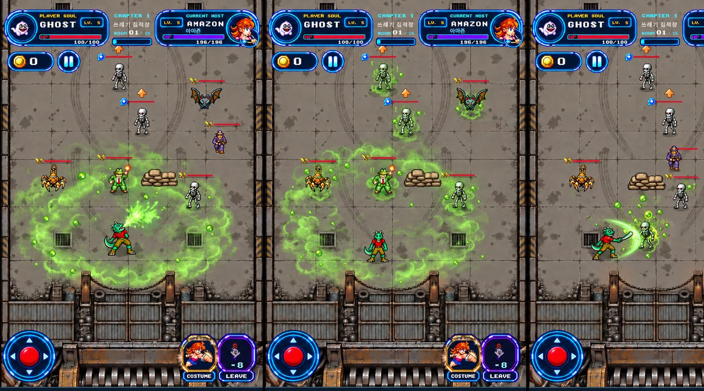
액티브 · 평타로 충전 독 뿜기 둘레 5 m 의 적을 모두 중독시킨다. 독은 아프고 느려진다.
세 컷: 액티브 발동 → 결과 → 패시브 순간
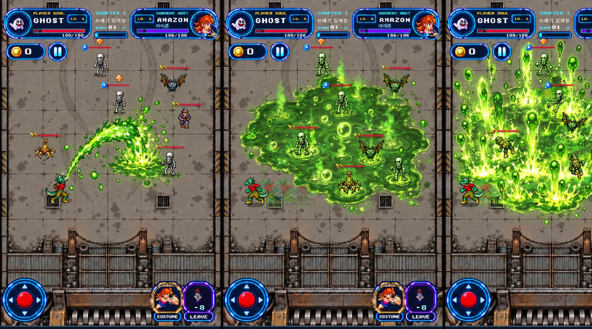
필살기 · 빙의할 때 1회 독 늪 독 늪을 깔고 빠지며, 늪이 끝날 때 터진다.
세 컷: 기 → 승 · 전 → 결
16
설녀 빙결 마녀 — 얼려서 깬다
패시브 서릿발 — 30% 로 적을 얼린다. 얼어 있는 적에게는 더 아프다.
★3 옵션 얼음이 깨질 때 둘레 적 빙결 (★5 에서 수치 ×2)
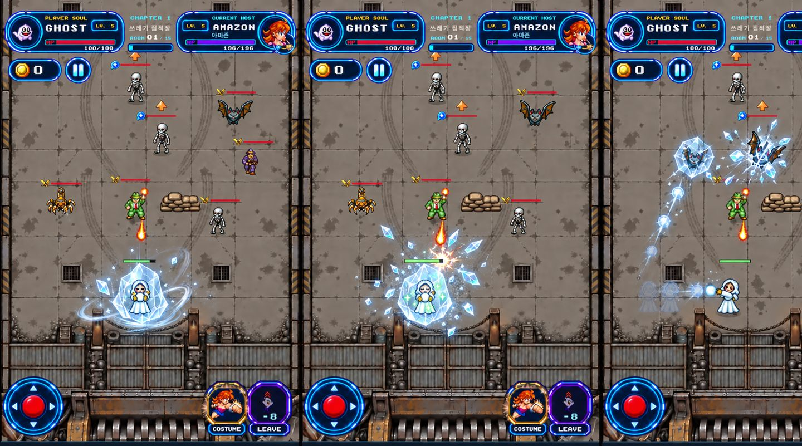
액티브 · 평타로 충전 얼음 감옥 2초간 얼음에 들어간다. 맞지도 때리지도 않고 체력 30% 를 채운다.
세 컷: 액티브 발동 → 결과 → 패시브 순간
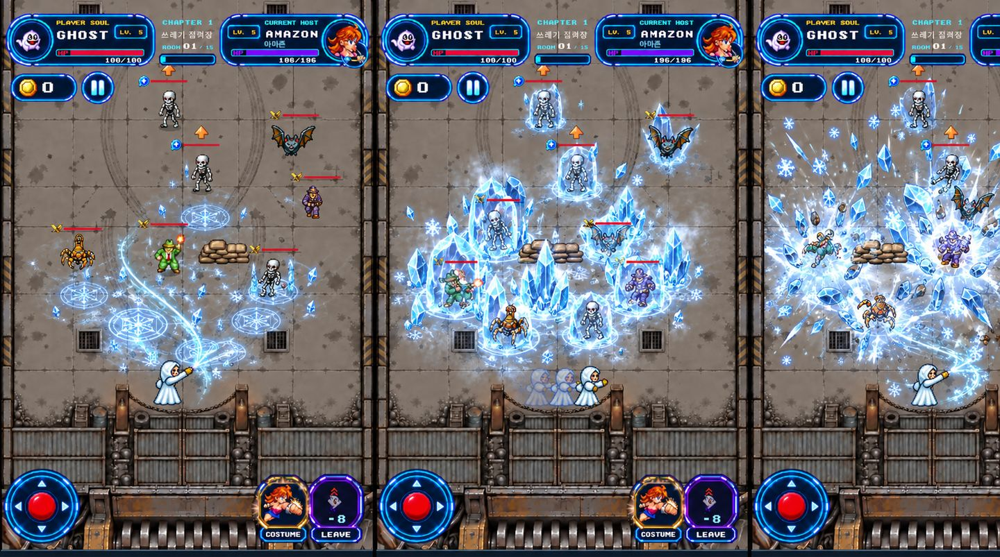
필살기 · 빙의할 때 1회 얼음 진 얼음 진을 깔아 기둥이 솟고 가둔 뒤 파쇄.
세 컷: 기 → 승 · 전 → 결
17
폭력배 난사 갱 — 막 쏟아붓는다
패시브 삥 — 주운 골드가 10% 더 들어온다.
★3 옵션 탄 관통 + 갈래 3 → 5 (현행) (★5 에서 수치 ×2)
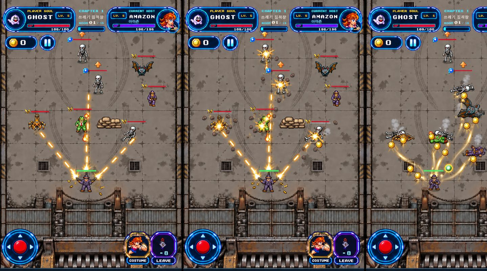
액티브 · 평타로 충전 3방향 난사 1초간 3방향으로 쏟아붓는다.
세 컷: 액티브 발동 → 결과 → 패시브 순간
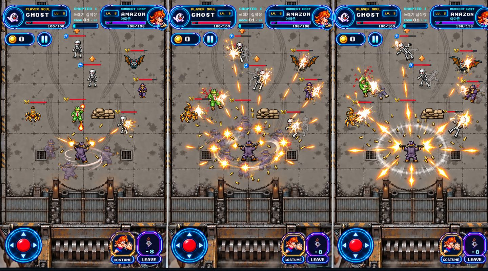
필살기 · 빙의할 때 1회 회전 난사 2.5초 돌며 사방 연사, 멈추며 사방 16발.
세 컷: 기 → 승 · 전 → 결
18
코만도(미사일) 폭격 지원 — 여럿을 추적
패시브 고폭탄 — 투사체가 지형지물을 무시한다.
★3 옵션 맞은 자리마다 작은 폭발 (★5 에서 수치 ×2)
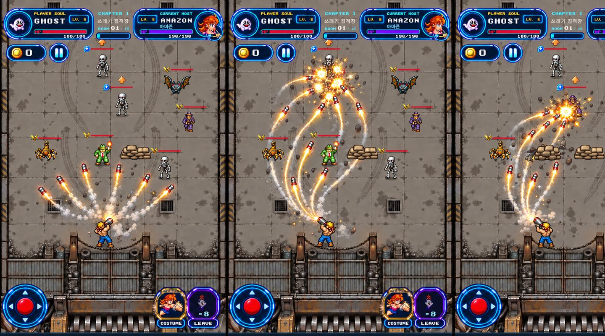
액티브 · 평타로 충전 다중 유도 반원으로 퍼진 8발이 한 대상으로 모여 든다.
세 컷: 액티브 발동 → 결과 → 패시브 순간
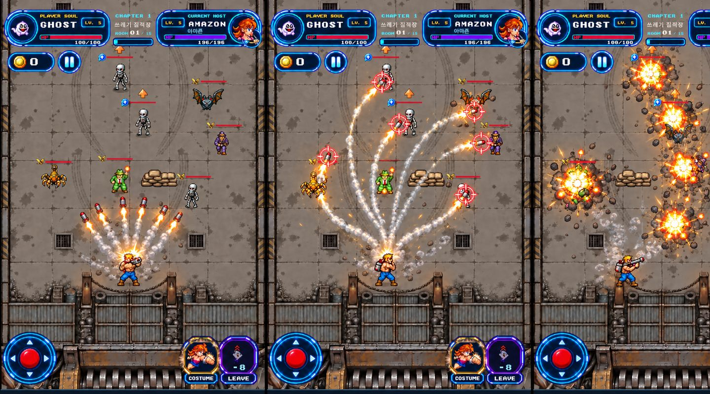
필살기 · 빙의할 때 1회 자폭 미사일 떼 6기가 각자 다른 적을 쫓아 동시 폭발.
세 컷: 기 → 승 · 전 → 결
19
코만도(레이저) 관통 포격 — 일직선
패시브 집속 광선 — 투사체가 지형지물을 무시하고 적을 관통한다.
★3 옵션 전기가 튈 때마다 감전 (둔화) (★5 에서 수치 ×2)
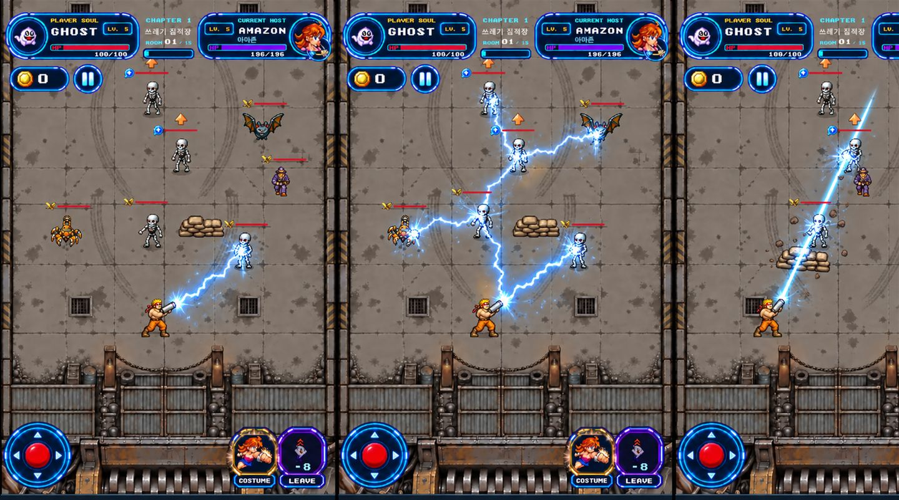
액티브 · 평타로 충전 연쇄 방전 3초간 주변 적에게 전기가 계속 튄다.
세 컷: 액티브 발동 → 결과 → 패시브 순간
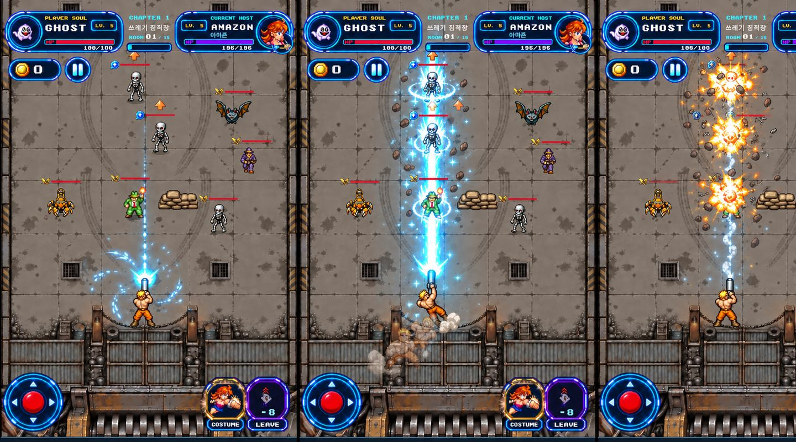
필살기 · 빙의할 때 1회 충전 레이저 0.5초 차지 뒤 굵은 관통 빔, 반동.
세 컷: 기 → 승 · 전 → 결
20
화이트 위저드 축적 마법사 — 모아서 쏜다
패시브 관통 광선 — 투사체가 지형지물을 무시하고 적을 관통한다.
★3 옵션 광탄이 벽에 한 번 튕긴다 (★5 에서 수치 ×2)
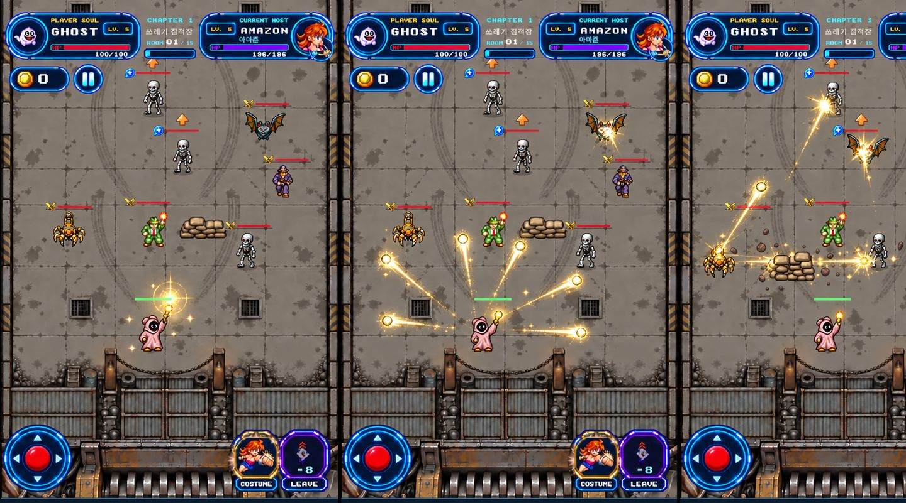
액티브 · 평타로 충전 광휘 확산 부채꼴 8방향으로 광탄을 쏜다.
세 컷: 액티브 발동 → 결과 → 패시브 순간
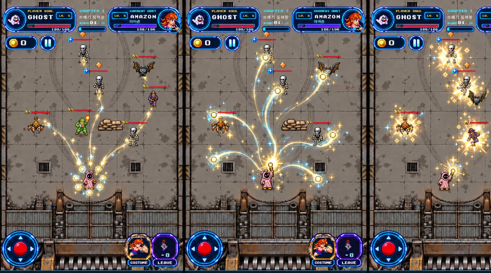
필살기 · 빙의할 때 1회 빛 구슬 일제 발사 평타로 쌓은 빛 구슬을 한꺼번에 유도 발사.
세 컷: 기 → 승 · 전 → 결
21
청룡 뇌신 — 번개가 튄다
패시브 낙뢰 — 10% 로 옆 적에게 번개가 튄다.
★3 옵션 끝날 때 가장 가까운 적에게 낙뢰 (★5 에서 수치 ×2)
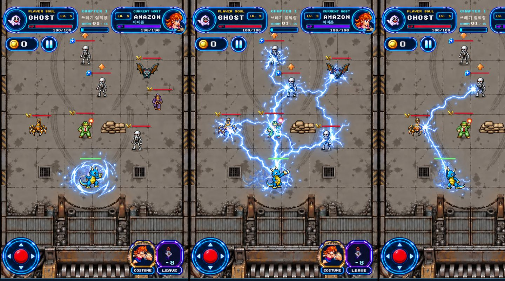
액티브 · 평타로 충전 뇌전 폭주 2초간 번개 튕김이 반드시 터진다.
세 컷: 액티브 발동 → 결과 → 패시브 순간
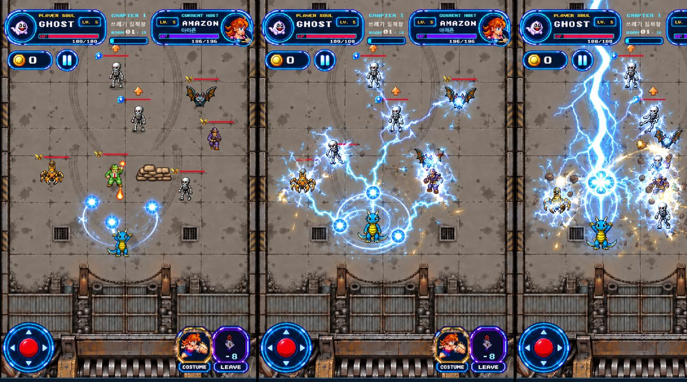
필살기 · 빙의할 때 1회 번개 구슬 구슬 3개가 몸 둘레를 돌며 번개, 끝에 낙뢰.
세 컷: 기 → 승 · 전 → 결
버티고 돌려준다 — 수호 · 반격 맞으면서 버티고, 버틴 만큼 돌려준다.
22
코만도(기관총) 방패병 — 막으며 전진
★3 옵션 쉴드가 깨질 때 둘레 적을 밀쳐낸다 (★5 에서 수치 ×2)
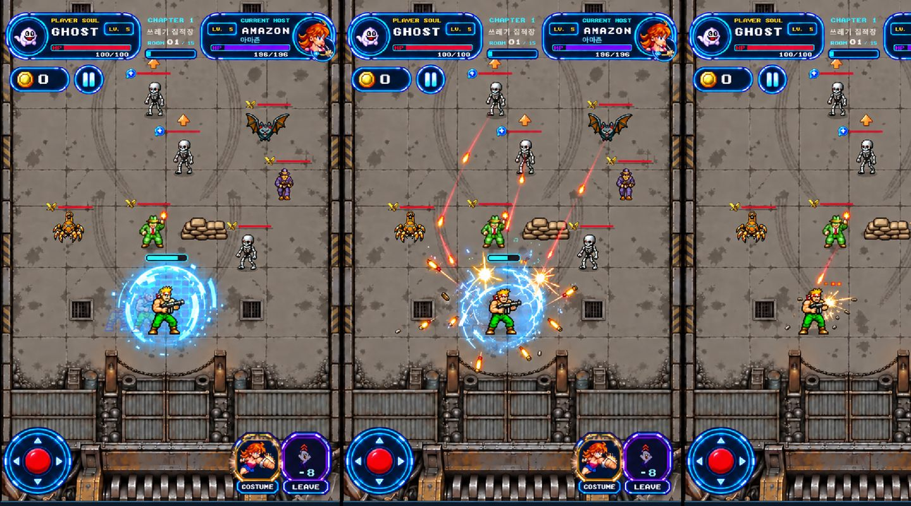
액티브 · 평타로 충전 방벽 전개 5초간 최대 체력만큼 쉴드를 두른다. 깎이면 끝난다.
세 컷: 액티브 발동 → 결과 → 패시브 순간
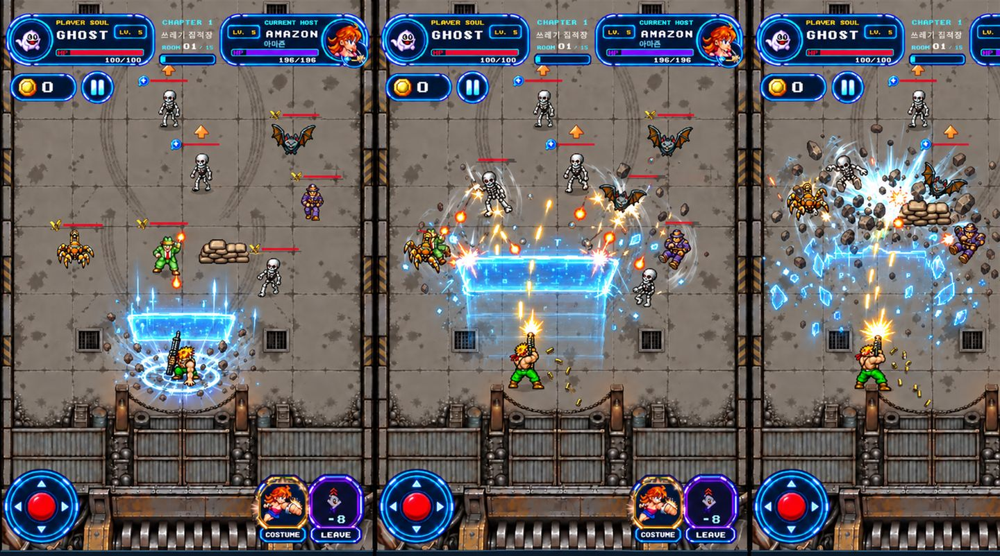
필살기 · 빙의할 때 1회 디플렉트 월 방벽을 세워 4초간 밀고 나가며 탄을 막는다.
세 컷: 기 → 승 · 전 → 결
23
아마존 정예 불굴의 반격자 ★ 필살기 변경
패시브 역전의 자세 — 쉴드가 남아 있는 동안 공격력이 오른다.
★3 옵션 무적 동안 받은 공격의 30% 를 되돌려 준다 (★5 에서 수치 ×2)
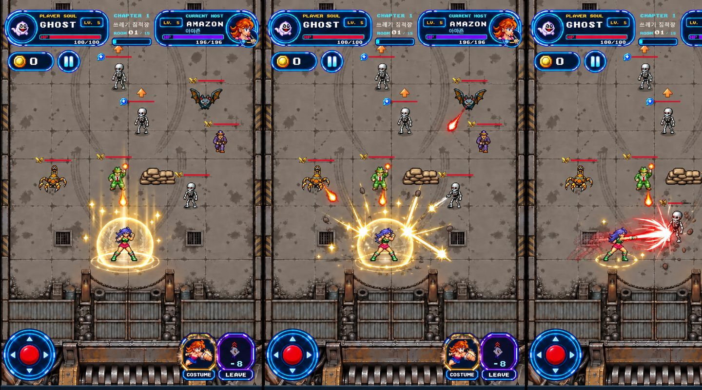
액티브 · 평타로 충전 불굴 무적 2.5초 + 쉴드 상한 해제. 해제가 무적보다 1.5초 더 간다.
세 컷: 액티브 발동 → 결과 → 패시브 순간
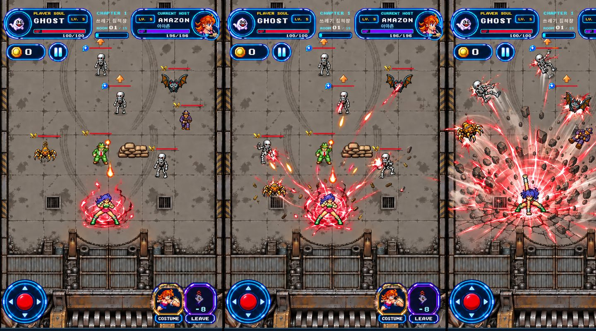
필살기 · 빙의할 때 1회 역린 3초간 받은 피해를 모았다가 주변으로 되돌려 터뜨린다.
세 컷: 기 → 승 · 전 → 결
정해 주실 것
컨셉군 7개와 캐릭터 배정
성급 성장 안 — 위력 +6% / 단계 · 보조값 계단 · ★3 옵션 · 필살기 +4% / 단계
★3 옵션 23개 (캐릭터마다)
★ 변경 — 필살기 7(갱스터 청부 처형 · 닌자(사슬) 사슬 돌격 연격 · 영매 골렘 강령 · 사신 망자 군단 · 로봇 포탑 군단 · 닌자 그림자 삼분신 · 아마존 정예 역린) · 액티브 2(영매 해골 소환 · 호퍼(기관단총) 백스텝 사격)
액티브와 필살기 차이가 약한 몸 — 코만도(미사일)(둘 다 미사일 무리) · 샐러맨더(둘 다 독 장판)
버튼 — 두 개 / 액티브 자동 발동 + 필살기 버튼 하나
같은 몸에 다시 빙의하면 필살기를 다시 줄지
갱스터 청부 처형의 보스 피해 상한(제안 15~20%)